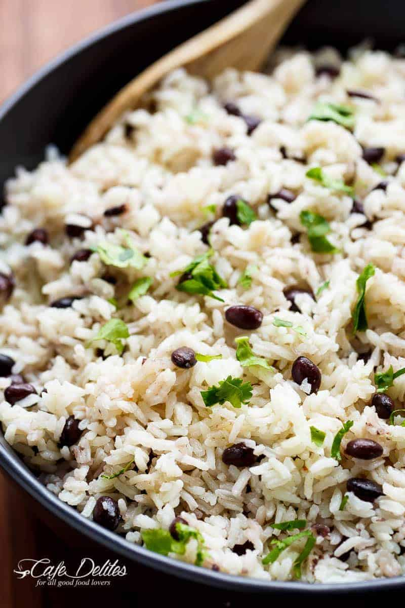

Black beans and rice

A tasty and healty meal.
This recipe will leave you both full and satisfied. Everyone should try to eat more beans. With this dish you will be longing for beans in your sleep.
Ingredients:
- 1 teaspoon olive oil
- 1 onion, chopped
- 2 cloves garlic, minced
- ¾ cup uncooked white rice
- 1 ½ cups low sodium, low fat vegetable broth
- 3 ½ cups canned black beans, drained
- 1 teaspoon ground cumin
- ¼ teaspoon cayenne pepper